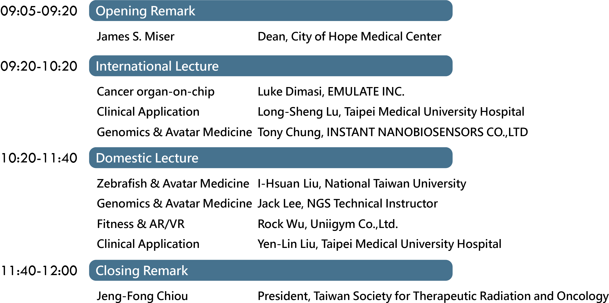

<!DOCTYPE html>
<html lang="en">

<head>
    <meta charset="UTF-8">
    <meta name="viewport" content="width=device-width, initial-scale=1.0">
    <link rel="stylesheet" type="text/css" href="./styles/AvaChi.css">
    <link rel="stylesheet" type="text/css" href="./styles/AvaMedia.css">
    <link href='https://fonts.googleapis.com/css?family=Kanit' rel='stylesheet'>
    <link rel="preconnect" href="https://fonts.googleapis.com">
    <link rel="preconnect" href="https://fonts.gstatic.com" crossorigin>
    <link href="https://fonts.googleapis.com/css2?family=Noto+Sans+TC:wght@300&display=swap" rel="stylesheet">
    <script src="https://ajax.googleapis.com/ajax/libs/jquery/3.5.1/jquery.min.js"></script>
    <title>AvatarMedicine</title>
</head>


<body>
    <!--top-->
    <div class="topboard">
        <div class="topboard-left">

            <div class="topboard-left-1">替身醫療論壇</div>
            <div class="topboard-left-2">Avatar Medicine Forum</div>

        </div>
        <div class="topboard-middle"></div>
        <div class="topboard-right">
            <div class="TBR-items-NULL"></div>
            <div class="TBR-items-NULL"></div>
            <div class="TBR-items-NULL"></div>
            <a href="Forum.html" class="TBR-items">
                <div>繁體中文</div>
            </a>
            <a href="ForumEN.html" class="TBR-items">
                <div>English</div>
            </a>
            <!-- 下拉選單觸發器 -->
            <div class="dropdown-trigger">Menu</div>
            <div class="dropdown-menu">
                <a href="#forum" class="TBR-items">
                    <div>Introduction</div>
                </a>
                <a href="#VIP" class="TBR-items">
                    <div>Guest</div>
                </a>
                <a href="#talker" class="TBR-items">
                    <div>Speakers</div>
                </a>
                <a href="#agenda" class="TBR-items">
                    <div>Agenda</div>
                </a>
                <a href="https://www.cancerfree.io/zh-tw/index" class="TBR-items">
                    <div>Contact</div>
                </a>
            </div>
        </div>
    </div>
    <div class="topboard-coverd"></div>
    

    <!--Contant-->
    <div class="imageKV"> </div>
    <div class="gradient-background">
        <div class="session">
            <div class="session_title">
                <div class="session_title_txt", id="forum", style="color: aliceblue;">Introduction</div>
            </div>
            <div class="IM_contant", style="color: aliceblue;">
                <p>
                    ​The Avatar Medicine Forum promotes the concept of virtual and physical avatars for patient therapy. Let everyone understand that avatar medicine may reduce the risks that patients need to bear during the treatment process, and it can overcome the limitations of distance and time. The advanced technologies include organoids, model organisms, big data, metaverse, etc. The general public can understand from a new perspective that these technologies have the potential to replace patients themselves and reduce medical risks. At the same time, the forum connects academic and industrial circles, so that potential technologies and products can be demonstrated. 
                </p>
                <p>&#20;</p>
                <p>
                    This forum invites heavyweight speakers from industry, government, academia, and research circles to share with us the changes and evolution of avatar medicine brought by the post-epidemic era. It is hoped that in the near future, through big data, AI, AR/VR/XR or NFT, virtual avatars can be realized in clinical and teaching. 
                </p>
                <p>&#20;</p>
            </div>
        </div>


        <div class="session">
            <div class="session_title">
                <div class="session_title_txt", id="VIP", style="color: aliceblue;">Honored Guest</div>
            </div>
            

        </div>

        <div class="session">
            <div class="session_title">
                <div class="session_title_txt", id="talker", style="color: #000000;">Speakers</div>
            </div>
            <div class="vip_intro normal-direction">
                <div class="vip_photo">
                    
                </div>
                <div class="vip_margin">
                    <div class="vip_name">Dr. Mister</div>
                    <div class="vip_title">Chief Medical Officer, Lixte Biotechnology Holdings, Inc. </div>
                    <div class="vip_description">
                        <p>Dr. Miser is an esteemed expert in the field of pediatric hematology/oncology, renowned worldwide for his contributions to the development of innovative anticancer therapies for children with cancer. He currently holds the position of Chair Professor at the College of Medical Sciences and Technology, Taipei Medical University, Taiwan, and serves as the Chief Medical Officer at Lixte Biotechnology Holdings, Inc., in Pasadena, CA, USA. </p>
                        <p>Throughout his impressive career, Dr. Miser has held prestigious leadership roles, including former Chairman of the Division of Pediatrics, former Director of the Department of Pediatric Hematology/Oncology, and notably, former President and Chief Executive Officer, and Chief Medical Officer, at City of Hope National Medical Center, Duarte, CA, USA. </p>
                        <p>Beyond his clinical expertise, Dr. Miser actively contributed to various committees and organizations, making a significant impact on cancer research. He was a key member of the Soft Tissue Sarcoma Strategy Group and played vital roles in the New Agents Executive and Steering Committee, as well as serving as the Phase II Coordinator for the Children's Cancer Group. Additionally, he chaired the Data Monitoring Committee at the National Wilms Tumor Society. </p>
                    </div>
                </div> 
            </div>

            <div class="vip_intro reverse-direction">
                <div class="vip_photo">
                    
                </div>
                <div class="vip_margin">
                    <div class="vip_name">Luke Dimasi</div>
                    <div class="vip_title">Senior Director, Product Management at Emulate, Inc. </div>
                    <div class="vip_description">
                        <p>Luke Dimasi is an accomplished marketing and product management professional with more than 15 years of experience in the life-science and biotechnology tools industry. Currently serving as the Senior Director of Product Management at Emulate, Inc., Dimasi takes the lead in developing and bringing to market products that empower scientific research and leave customers delighted. </p>
                        <p>Dimasi’s true talent lies in understanding his customers deeply and effectively transforming their insights into successful strategies. He brings a vibrant and imaginative approach to scientific and technical marketing, consistently driving product development and ensuring successful commercial execution. </p>
                        <p>Having a background in cellular and molecular biology, combined with a solid foundation in product management, portfolio development, and commercialization, Dimasi's experience is wide-ranging. His expertise spans areas such as drug discovery and development, bioprocessing, genomics, and cell biology research, including stem cell biology and cell therapy. </p>
                    </div>
                </div> 
            </div>
            
            <div class="vip_intro">
                <div class="vip_photo normal-direction">
                    
                </div>
                <div class="vip_margin">
                    <div class="vip_name">Dr. Lu</div>
                    <div class="vip_title">Director Center for Cell Therapy, Taipei Medical University Hospital</div>
                    <div class="vip_description">
                        <p>Dr. Lu is a renowned figure in the field of biomedical materials and tissue engineering. He currently holds the position of Associate Professor at the Institute of Biomedical Materials and Tissue Engineering, as well as being a joint Associate Professor in both the International Ph.D. Program in Biomedical Engineering and the International Ph.D. Program in Cell Therapy and Regenerative Medicine at Taipei Medical University. In addition to his academic roles, Dr. Lu also serves as a practicing physician at Taipei Medical University Hospital. </p>
                        <p>Dr. Lu boasts an impressive career with several notable appointments and achievements. He holds the prestigious position of Vice Director at the Cancer Translational Research Center of Taipei Medical University since April 2023. Prior to this, he had been serving as an Assistant Professor at the Institute of Biomedical Materials and Tissue Engineering and the International Ph.D. Program in Cell Therapy and Regenerative Medicine from 2014 to 2022. In recognition of his outstanding contributions, he was awarded the Project-Enhanced Scholarship for Overseas Studies in 2007. </p>
                        <p>His research interests are diverse and encompass various cutting-edge areas in the field of biomedicine. Dr. Lu is particularly focused on translational radiobiology, radiation oncology, cardiovascular biology, and biomedical optics, displaying a passion for exploring innovative approaches in these domains. </p>
                    </div>
                </div> 
            </div>

            <div class="vip_intro reverse-direction">
                <div class="vip_photo">
                    
                </div>
                <div class="vip_margin">
                    <div class="vip_name">Professor Liu</div>
                    <div class="vip_title">Professor at the Department of Animal Science and Technology at National Taiwan University </div>
                    <div class="vip_description">
                        <p>Professor Liu is an esteemed academic in the field of developmental biology and regenerative medicine. He holds a position as a professor at the Department of Animal Science and Technology and is affiliated with the Developmental Biology and Regenerative Medicine Research Center at National Taiwan University. Additionally, Professor Liu is also involved in the College of Veterinary Medicine at National Taiwan University. </p>
                        <p>He began his academic pursuits at National Taiwan University, where he pursued a degree in Animal Science and Technology, laying the foundation for his future achievements. Later on, he furthered his expertise through a joint appointment at the College of Veterinary Medicine within the same university. </p>
                        <p>Professor Liu's pursuit of knowledge extended beyond national borders. He enriched his academic background through postdoctoral research at the University of Pennsylvania in the United States, where he honed his skills in developmental biology and regenerative medicine. Prior to that, he earned a Ph.D. in Veterinary Medicine from North Carolina State University, which undoubtedly shaped his research interests and expertise. </p>
                    </div>
                </div> 
            </div>

            <div class="vip_intro normal-direction">
                <div class="vip_photo">
                    
                </div>
                <div class="vip_margin">
                    <div class="vip_name">Dr. Chiu</div>
                    <div class="vip_title">Dean of the School of Medicine at Taipei Medical University Hospital </div>
                    <div class="vip_description">
                        <p>Dr. Chiu currently holds several important positions, including Dean of the School of Medicine at Taipei Medical University Hospital, Convener of the Proton Center at Taipei Cancer Center, Professor in the Department of Medicine at Taipei Medical University, President of the Taiwan Society for Radiation Oncology, and Director of the Taiwan Palliative Care Foundation. He is also the Principal Investigator for the National Health Insurance Administration's National Three-Year Program "Training and Civil Advocacy for Spiritual Care Personnel in Palliative Care" (2017-2019) and serves as the Chairman of the Christian Salvation Mission. </p>
                        <p>Dr. Chiu's expertise lies in various areas, including photon knife therapy, IMRT, helical knife therapy (TOMO), combined therapy with radiation and chemotherapy, dynamic arc knife radiotherapy, complementary and comprehensive medical CAM, cancer gene sequencing, cancer spiritual care, and MR-guided focused ultrasound surgery (MRgFUS). </p>
                        <p>He obtained his Doctoral degree from the Institute of Medical Sciences at National Defense Medical Center and holds a Master's degree in Medicine and Healthcare Management from Taipei Medical University. He is also a graduate of Taipei Medical University's School of Medicine. </p>
                        <p>In terms of experience, he has served as the Director of Taipei Cancer Center and the Director of the Center for Cancer Care Management at Taipei Medical University. Additionally, he is a board member of the Taiwan Society for Hospice and Palliative Medicine and has been a Visiting Scholar at the Montefiore Medical Center in the United States. </p>
                    </div>
                </div> 
            </div>

        </div>

        <div class="session", style="height: 85vw;">
            <div class="session_title">
                <div class="session_title_txt", id="agenda", style="color: black;">Agenda</div>
                <div class="agenda">
                    
                </div>
            </div>
        </div>


        <div class="session">
            <div class="faq">
                <div class="session_title">
                    <div class="session_title_txt", style="color: black;">FAQ</div>
                        <div class="faq-item">
                        <ul>
                            <li>    
                                <div class="qa-title">What is Avatar Medicine?</div>
                                <div class="qa-content">
                                    Avatar Medicine is to build virtual or physical twins for patients, and it decreases the risk which patients have to take during their treatments. Also, it breaks the limit of distance and time. 
                                </div>
                            </li>

                            <li>
                                <div class="qa-title">What is physical twin? </div>
                                <div class="qa-content">
                                    Physical twins usually comes from human biopsy, or they can be a model that are similar to human. They can simulate certain syndromes of human diseases. Through observing their reactions to environmental stimuli, we can do research, diagnoses and offer help in treatment. 
                                </div>
                            </li>

                            <li>
                                <div class="qa-title">What is virtual twin? </div>
                                <div class="qa-content">
                                    Virtual twins build images and models by analyzing and digitalizing data from human. By operating a predictive program, virtual twins can provide clinical consultation, diagnoses and assistance in treatment. 
                                </div>
                            </li>

                            <li>
                                <div class="qa-title">What is Metaverse? </div>
                                <div class="qa-content">
                                    Metaverse is a world made of AI, VR, 5G, big data, digital assets and virtual identity. 
                                    You can work, have fun, shop and play games in it. 
                                </div>
                            </li>

                            <li>
                                <div class="qa-title">What is the fee for Avatar Medicine Forum?  </div>
                                <div class="qa-content">
                                    0. Our Forum is free of charge. It only takes you 2 hours. 
                                </div>
                            </li>

                            <li>
                                <div class="qa-title">How to register?</div>
                                <div class="qa-content">
                                    Go to the event website, click the link and leave your contact information! 
                                </div>
                            </li>

                            <li>
                                <div class="qa-title">How to register?</div>
                                <div class="qa-content">
                                    Go to the event website, click the link and leave your contact information! 
                                </div>
                            </li>
                            <li>
                                <div class="qa-title">What is NFT?  </div>
                                <div class="qa-content">
                                    NFT stands for Non-Fungible Token, in Chinese is 非同質化硬幣, which means the products or figures have a feature that could be exchanged to another one. 
                                    In short, NFT confers a unique code to digital product. You can get the code when you buy this digital product. If you have many of the same products (such as pictures, images….) that would be treated as a difference product due to different codes. 
                                </div>
                            </li>
                            <li>
                                <div class="qa-title">How to get NFT?</div>
                                <div class="qa-content">
                                    First of all, you need a wallet to pay the transaction fee. Attend the conference this year, scan the QR code on the screen, and get a limited edition NFT by free mint.   
                                </div>
                            </li>
                            <li>
                                <div class="qa-title">How to get wallet? </div>
                                <div class="qa-content">
                                    Picture the wallet as a passport in the virtual world. Currently, MetaMask is one of the most popular wallets on the Ethereum blockchain.  
                                </div>
                            </li>
                            <li>
                                <div class="qa-title">Issued shares</div>
                                <div class="qa-content">
                                    Five thousand; One for each only.  
                                </div>
                            </li>

                            <li>
                                <div class="qa-title">What can NFT do for?</div>
                                <div class="qa-content">
                                    Follow Cancerfree Biotech on Facebook and Twitter(@CancerFreeBio) and pay attention to monthly posts about the lucky draw. You can use NFT from the Avatar Medicine Forum this year and join the lucky draw. Income from this memorize NFT on the secondary market would be used to CancerFree Biotech EVA Select service or treatment for children with cancer without any charges. 
                                </div>
                            </li>
                        </ul>

                    </div>
                </div>
            </div>
        </div>
        
    </div>
    <div class="white-board">
        <div class="session">
            <div class="session_title">
                <div class="session_title_txt", style="color: black;">Registration</div>
            </div>
            <div class="portal">
                    <div class="portal-left">
                        <a href="https://www.accupass.com/go/Avatar2023">
                            
                        </a>
                    </div>
                    <div class="portal-right">
                        <a href="https://www.eventbrite.com/e/avatar-medicine-forum-2023-tickets-697936054527?aff=oddtdtcreator">
                            
                        </a>
                    </div>
            </div>
        </div>

        <div class="session">
            <div class="session_title">
                <div class="session_title_txt", style="color: black;">Organizer</div>
            </div>
            <div class="organizer">
                
            </div>
        </div>

        <div class="session">
            <div class="session_title">
                <div class="session_title_txt", style="color: black;">Sponsor</div>
            </div>
            <div class="sponsor">
                
            </div>
        </div>
    </div>

    <div class="endboard">
        <div class="endboard-up">
            <div class="contact_us">Contact US</div>
        </div>
        <div class="endboard-down">
            <div class="phone">Phone: +886-2-27322701</div>
            <div class="address">Address: 3F.-2, No. 56, Lane 258, Ruiguang Rd, Neihu District, Taipei City</div>
        </div>    
    </div>

    <!--xxxxxxxxxxxxxxxxxx-->
	<a href="#top">
		<div class=go-top></div>
	</a>
	<div class="lefticon"></div>
	<div class="dogicon"></div>
</body>

<script>
    /*QA click*/
    $(".qa-title").click(function () {
        $(".qa-content").slideUp();
        $(".qa-title.on").removeClass("on");
        $(this).next().stop().slideDown();
        $(this).stop().addClass("on");
    });

    /*移移動偏移往上*/ 
    $(document).ready(function(){
    $('a[href^="#"]').on('click', function(event) {
        var target = $(this.getAttribute('href'));

        if(target.length) {
            event.preventDefault();

            // 滾動偏移量
            var offset = 130; // 你可以調整這個值來改變滾動的偏移量，正數表示偏上，負數表示偏下

            $('html, body').stop().animate({
                scrollTop: target.offset().top - offset
            }, 1000);
        }
    });
    });

    /*禁止手機用戶左右活動*/
    document.addEventListener('touchmove', function(e) {
        e.preventDefault();
    }, { passive: false });


</script>

</html>